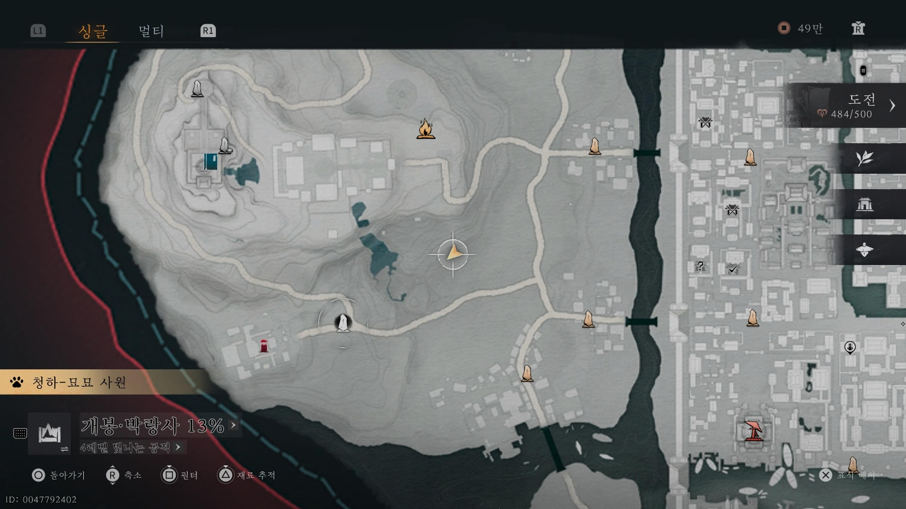
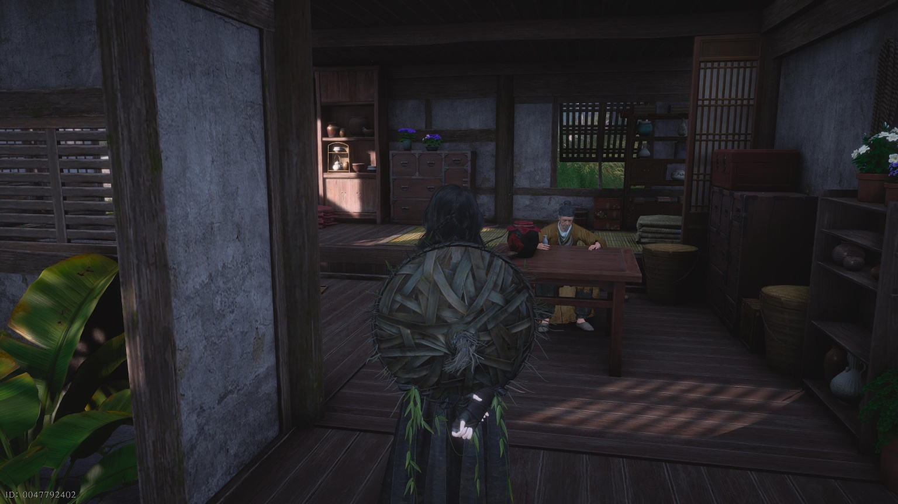
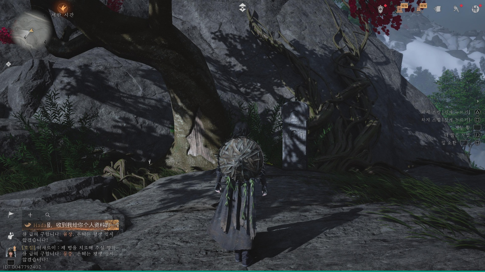

만사록
군주를 위한 검
술로 근심을 달래는 노인 성일검
📜 퀘스트 개요
검을 만드는 노인 성일검을 만나 명검을 받고, 이를 비석에 바치는 의뢰입니다.
1. 성일검과 대연검
아래 지도에 표시된 위치의 집 안으로 들어가세요.
그곳에 있는 성일검과 대화하면 술을 한 잔 나누고 완성된 [대연검]을 받을 수 있습니다.


2. 비석에 검 바치기
⚠️ 이동 팁: 목표 지점이 높거나 멀 수 있으니 [대경공]을 사용하여 이동하세요.
부의산 경계석으로 이동한 후, 아래 장소로 날아가세요.
도착하면 비석이 하나 있습니다.
❗ 중요: 비석과 두 번 상호작용해야 합니다.
첫 번째 대화 후 다시 상호작용하여 검을 바치세요.
첫 번째 대화 후 다시 상호작용하여 검을 바치세요.


3. 완료
검을 바치고 컷신을 감상한 뒤, 다시 성일검에게 돌아가 대화하면 퀘스트가 완료됩니다.
군주를 위한 검을 바치고 돌아오면
퀘스트는 완료됩니다.